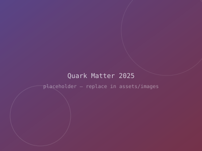
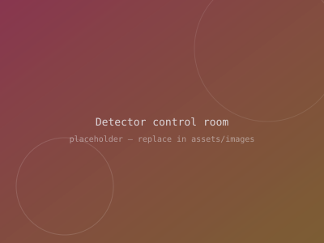
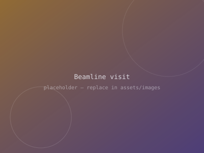
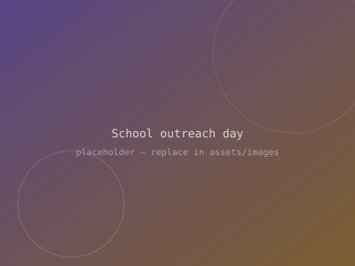
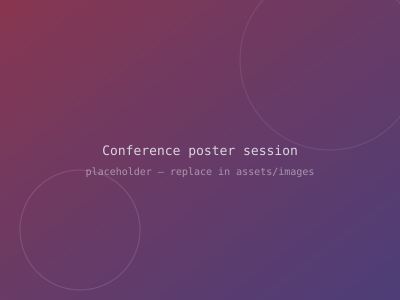
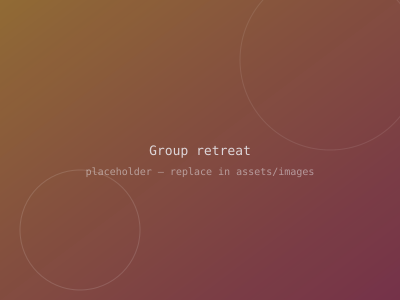

Gallery
Gallery
Snapshots from conferences, beamtime, and outreach. Click any image to enlarge. (placeholder images — swap in your own under assets/images/)

Quark Matter 2025
Control room shift
Beamline visit
School outreach day
Poster session
Group retreat
Group retreat